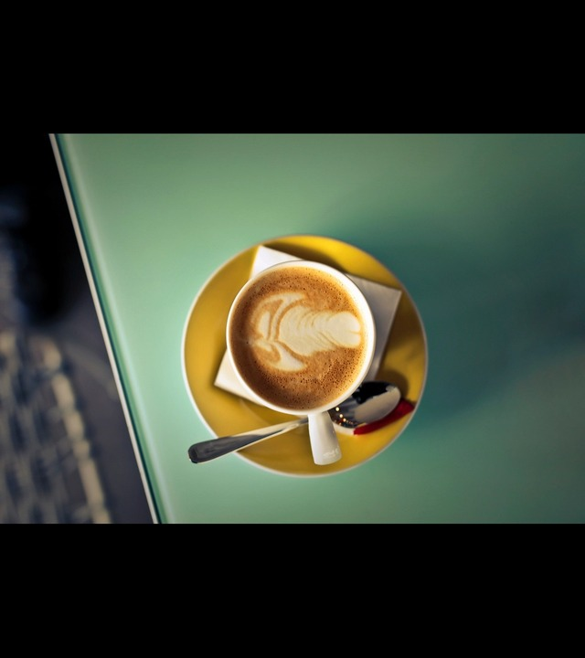
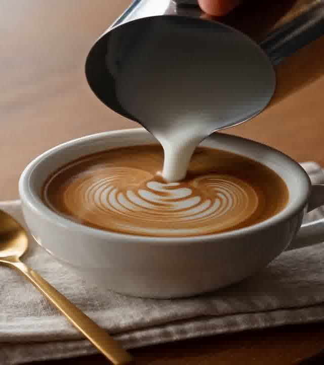

Real photo on the left, our frame on the right — same drink, two media. This is what would sit either side of the split in section 1.


Left: a real cafe photo of a latte on a wooden table, 1024×683, CC0 — no credit needed, safe to use commercially.
Right: a frame from the latte pour we already have, so the same product arrives as motion rather than a better still — which is the honest sales point: we film it.
Why this one: a coffee is a coffee to any viewer, so the claim survives without pretending it is the identical cup. The shoe version needed a synthetic "bad photo", and that is what read fake.